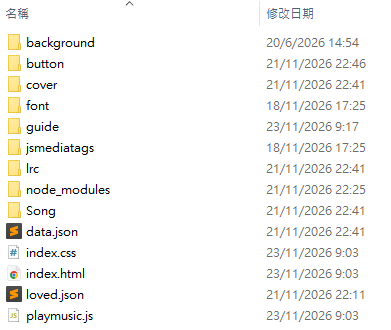

MUSIC PLAYER DOCUMENTATION
使用指南
選擇本機音樂庫、新增歌曲、設定封面與歌詞，並讓播放器自動更新 data.json。
快速開始
開啟播放器，按下資料夾圖示。
請選擇包含 data.json、Song、cover 或 lrc 的資料夾。
載入完成後即可從右側歌曲清單選擇歌曲。
選擇音樂庫資料夾
- 開啟播放器頁面
index.html。 - 按下底部控制列的資料夾圖示。
- 在檔案選擇視窗中選擇音樂庫的根資料夾，不是單獨選取音樂檔案。
- 確認瀏覽器要求的讀取／寫入權限後，播放器會讀取
data.json並載入歌曲。

選擇包含音樂庫資源的資料夾，而不是選擇某一首歌曲。
新增歌曲
- 按下播放器控制列中的新增歌曲圖示（加號圖示）。
- 選擇一首或多首音訊檔。支援：
.mp3、.flac、.ogg、.wav、.m4a。 - 如尚未連結資料夾，播放器會要求選擇音樂庫資料夾。
- 確認後，音訊會存入
Song/；內嵌封面會存入cover/；播放器會自動更新data.json。
資料夾結構
建議使用下列結構：
音樂庫/
├── data.json
├── loved.json
├── Song/
│ ├── My Song.mp3
│ └── Another Song.flac
├── cover/
│ ├── My Song.jpg
│ └── Another Song.png
├── lrc/
│ ├── My Song.lrc
│ └── Another Song.lrc
└── background/
└── My Song.jpgcover、lrc 和 background 資料夾可由匯入流程自動建立。
data.json 格式
data.json 是音樂庫清單。通常由播放器在新增歌曲時自動產生，不需要手動維護。
{
"version": 1,
"songs": [
{
"name": "My Song",
"audio": "Song/My Song.mp3",
"cover": "cover/My Song.jpg",
"lrc": "lrc/My Song.lrc",
"background": null,
"metadata": {
"title": "My Song",
"artist": "Artist Name",
"album": "Album Name",
"track": 1
}
}
]
}- name
- 歌曲的唯一識別名稱，應與同名資源的檔名一致。
- audio
- 音訊檔案相對於音樂庫根目錄的路徑。
- cover / lrc / background
- 對應資源的相對路徑；沒有該資源可設為
null。 - metadata
- 標題、演出者、專輯與曲目資訊；播放器可能讀取音訊內嵌標籤。
LRC 歌詞規則
LRC 可放在與音樂檔相同層級，或放在 lrc/ 資料夾。當在連結資料夾模式下匯入歌曲時，播放器會尋找與音訊檔名相同的 LRC。
[00:00.00] 第一行歌詞
[00:04.25] 第二行歌詞
[00:08.50] 第三行歌詞時間格式可使用 [mm:ss.xx]，其中分鐘與秒數為數字，小數部分為百分之一秒。
封面與背景圖
封面圖
支援 .jpg、.jpeg、.png、.webp、.gif。建議放置於 cover/，檔名和歌曲名稱一致。
背景圖
支援相同格式。建議放置於 background/，檔名和歌曲名稱一致。未設定時播放器會嘗試使用封面。
內嵌封面
如果音訊檔內含封面資訊，匯入時可自動擷取並儲存到 cover/。
喜愛清單
按下愛心按鈕可以新增或移除喜愛歌曲。清單會儲存在瀏覽器的本機儲存空間；連結音樂庫資料夾後，也會嘗試將內容寫入根目錄的 loved.json。
[
"My Song",
"Another Song"
]loved.json 的項目是歌曲的 name，不是檔案路徑。
疑難排解
沒有任何歌曲載入
請確認選擇的是包含 data.json 的音樂庫根目錄，以及 data.json 中的 audio 路徑與實際檔案相符。
歌詞沒有顯示
確認副檔名為 .lrc；音樂檔名稱不含副檔名後，必須和 LRC 檔名稱完全相同。也請確認時間標記格式正確。
瀏覽器無法選擇資料夾
請使用支援 File System Access API 的桌面 Chromium瀏覽器。
無法找到新增的歌曲
確認檔案副檔名受支援，再重新選擇資料夾或重新整理頁面。